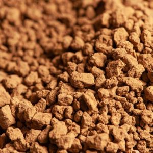
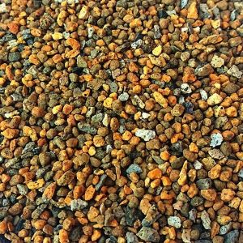

| Sustrato | Descripción | Uso | Imagen | |
|---|---|---|---|---|
| 1 | Akadama | La akadama es una arcilla granular de color rojo-marrón de origen volcánico que se encuentra tan sólo en Japón y que se utiliza como sustrato de cultivo neutro, principalmente para el cultivo del bonsái. | La estructura y la granulometría de este sustrato permiten conservar un nivel de humedad ideal para el buen desarrollo de los vegetales que en ella quedan, ayudando al desarrollo de las raíces y salud del árbol |  |
| 2 | Kiryuzuna | Está conformado por pequeños granos y es un tipo de arena de río, que proviene de rocas volcánicas. Es rico en hierro, el pH es ligeramente ácido, de 6,5. | Sirve para el drenaje de agua, retención de agua, disminución de pH, aireación de las raíces y aporte de hierro. Usado en bonsáis que requieren un drenaje rápido |  |
| 3 | Kanuma | El sustrato Kanuma es un sustrato de color amarillo pálido extraído del Monte Asama, en Japón. Ácido y ligero, pH bajo en el suelo | Su alta porosidad facilita una gran retención de agua. Su pH ácido le convierte en us sustrato perfecto para el cultivo de azaleas. El tamaño del grano es de 2-6 mm.Bonsáis que necesitan un pH bajo | |
| 4 | Sphagnum | Sphagnum consta de un pseudotallo principal con fascículos de ramas, de dos a cuatro ramas colgantes. La parte de arriba de la planta, o capítulo contiene fascículos de ramas nuevas agrupadas. Alta humedad en las raíces | Sphagnum es un género de musgos comúnmente llamados musgos de turbera. Pueden retener grandes cantidades de agua dentro de sus células. Pueden retener más de 20 veces su peso seco en agua. Bonsáis que requieren una alta humedad | |
| 5 | Keto | El Sustrato Keto es un sustrato japonés muy empleado en el cultivo de bonsáis sobre roca. Dada su textura pegajosa, también se utiliza en el cultivo en kokedama para que el sustrato se adhiera fácilmente a las raíces al formar la esfera. | Este suelo de consistencia pastosa se utiliza para que las raíces crezcan en situaciones difíciles. Esta pasta se adhiere fácilmente a las grietas de las piedras, lo que permite que las raíces de los árboles puedan crecer abrazándose a las piedras. |
Youtube
Sustratos
Herramientas
Macetas
Abonos
Shito
Mame
Shohin
Komono